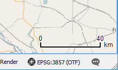

In the Scale Bar Decoration dialog, do the following:
- Click the checkbox to Enable scale bar.
- Set Scale bar style to Tick Up
- Keep Color of bar as Black
- Keep Size of bar as 30 meters/km
- Keep Automatically snap to round number on resize enabled
- Set Placement to Bottom right.
- Keep Margin to edge options
- Click OK to apply the settings and close the dialog
A scale bar should appear at the Bottom right corner of the map canvas.
